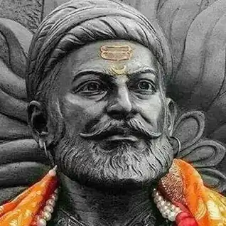

Ratan Naval Tata (born 28 December 1937) is an Indian industrialist, philanthropist and former chairman of Tata Sons. He was a chairman of the Tata Group from 1990 to 2012, and interim chairman from October 2016 through February 2017. He continues to head its charitable trusts.[2][3] In 2008, he received the Padma Vibhushan, the second highest civilian honour in India, after receiving the Padma Bhushan, the third highest civilian honour in 2000.

Avul Pakir Jainulabdeen Abdul Kalam BR (/ˈɑːbdəl kəˈlɑːm/ ⓘ; 15 October 1931 – 27 July 2015) was an Indian aerospace scientist and statesman who served as the 11th president of India from 2002 to 2007. He was born and raised in Rameswaram, Tamil Nadu and studied physics and aerospace engineering. He spent the next four decades as a scientist and science administrator, mainly at the Defence Research and Development Organisation (DRDO) and Indian Space Research Organisation (ISRO) and was intimately involved in India's civilian space programme and military missile development efforts.[1] He thus came to be known as the Missile Man of India for his work on the development of ballistic missile and launch vehicle technology.[2][3][4] He also played a pivotal organisational, technical, and political role in India's Pokhran-II nuclear tests in 1998, the first since the original nuclear test by India in 1974.

Shivaji I (Shivaji Shahaji Bhonsale; Marathi pronunciation: [ʃiʋaːd͡ʒiˑ bʱoˑs(ə)leˑ]; c. 19 February 1630 – 3 April 1680[5]) was an Indian ruler and a member of the Bhonsle Maratha clan.[6] Shivaji carved out his own independent kingdom from the declining Adilshahi Sultanate of Bijapur that formed the genesis of the Maratha Empire. In 1674, he was formally crowned the Chhatrapati of his realm at Raigad Fort.